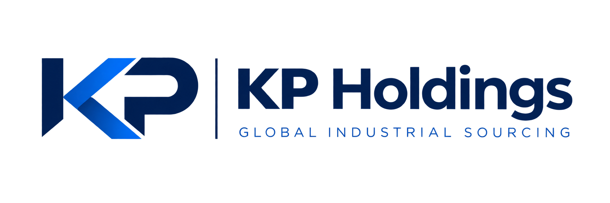
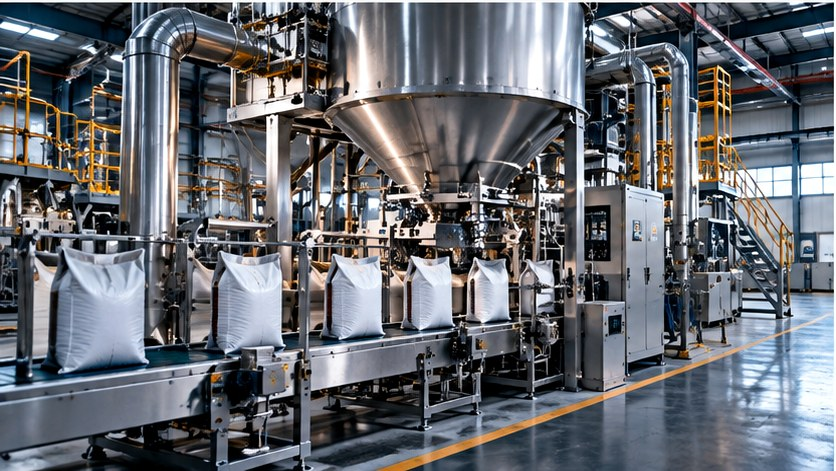

Processing
Raw-material handling, conveying, mixing, sifting and process equipment.

Processing, packaging and production machinery sourced around capacity, product and automation requirements.

Raw-material handling, conveying, mixing, sifting and process equipment.
FIBC handling, weighing, powder handling and automatic bag filling systems.
Liquid, powder and granular filling equipment for production environments.
Automatic labeling, coding and identification integrated into packaging lines.
Carton forming, packing, closing and secondary packaging solutions.
Case packing, conveying, palletizing and production-line automation.
Share capacity, product characteristics, package format, automation level, destination and target timing.
SEND MACHINERY RFQ ↗